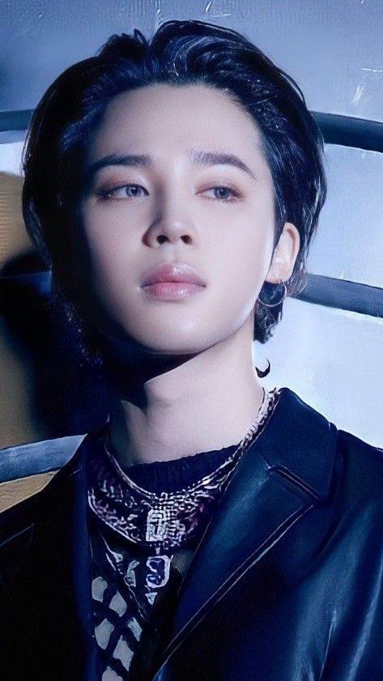

ENHYEPN
ENHYPEN
Enhypen, é um boy-group sul-coreano formado pela empresa Belift Lab, empreendimento conjunto entre as empresas de entretenimento CJ ENM e HYBE Corporation. Formado por meio do reality show de sobrevivência de 2020, I-Land, o grupo é composto por sete integrantes: Jungwon, Heeseung, Jay, Jake, Sunghoon, Sunoo e Ni-ki.
MEMBROS
- YANG JUNGWON
- LEE HEESEUNG
- PARK JONGSEONG
- SIM JAEYUN
- PARK SUNGHOON
- KIM SEONWOO
- NISHIMURA RIKI
BTS
BTS, também conhecido como Bangtan Boys, é um grupo masculino sul-coreano formado em 2010. O grupo consiste em sete integrantes: Jin, Suga, J-Hope, RM, Jimin, V e Jungkook, os quais coescrevem e coproduzem grande parte do seu material.
MEMBROS
- KIM NAMJOON
- KIM SEOKJIN
- MIN YOONGI
- JUNG HOSEOK
- PARK JIMIN 
- KIM TAEHYUNG
- JEON JUNGKOOK

NEWJEANS
NewJeans, também conhecido como NJZ, é um girl group sul-coreano. O grupo é composto por cinco integrantes: Minji, Hanni, Danielle, Haerin e Hyein. Foi formado pela ADOR, uma subsidiária da Hybe Corporation, e pré-lançou seu single de estreia "Attention" em 22 de julho de 2022.
MEMBROS
- KIM MINJI
- PHAM HANNI
- MARSH DANIELLE
- KANG HAERIN
- LEE HYEIN